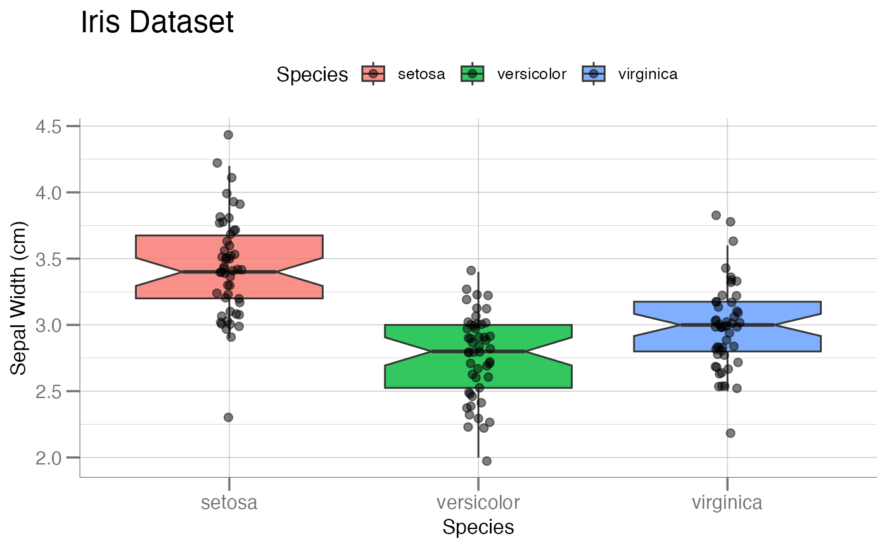
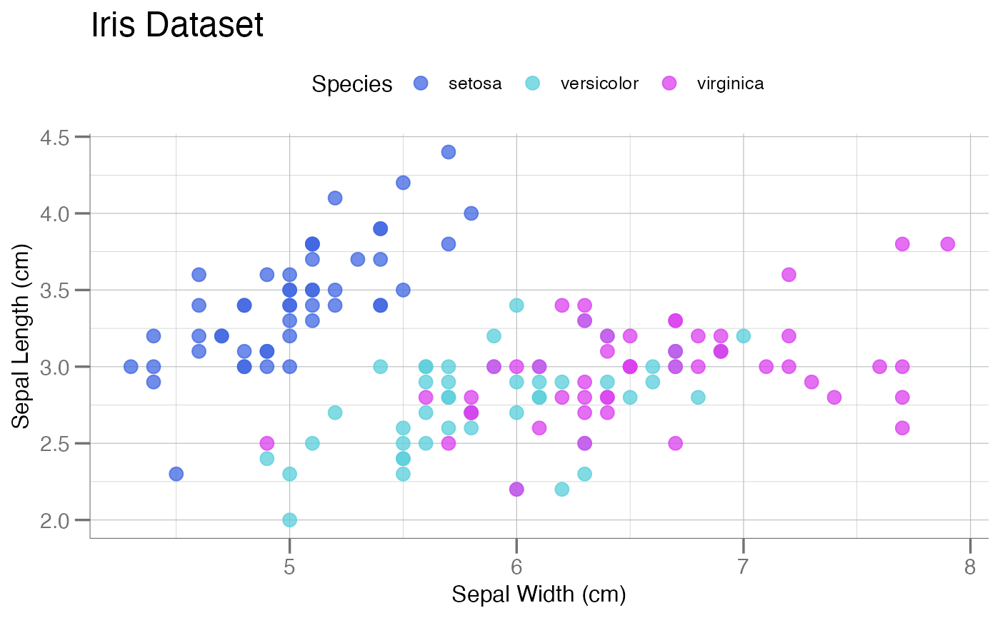
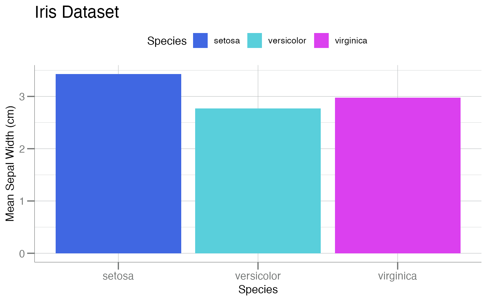
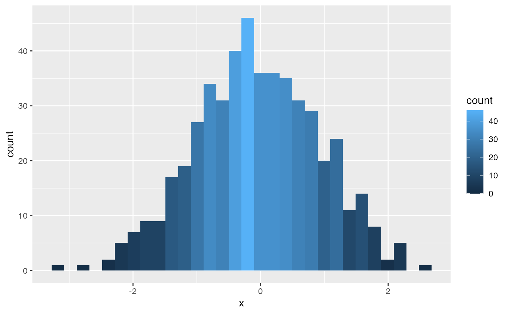
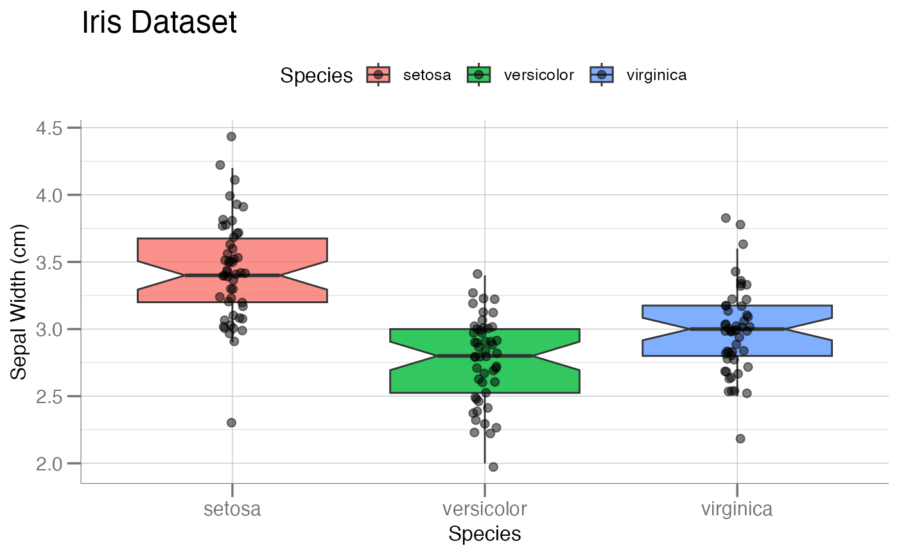
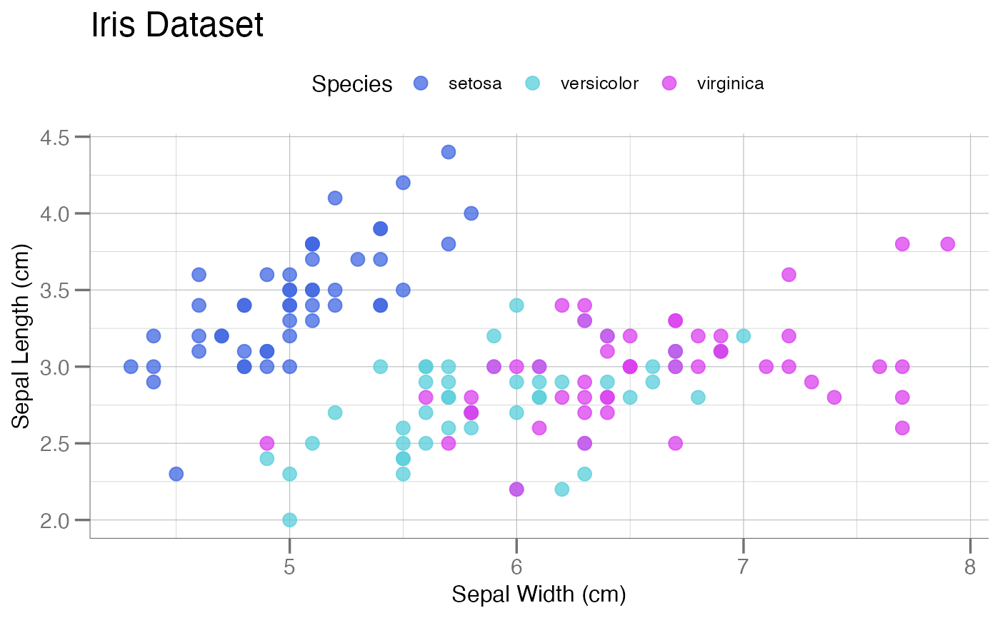
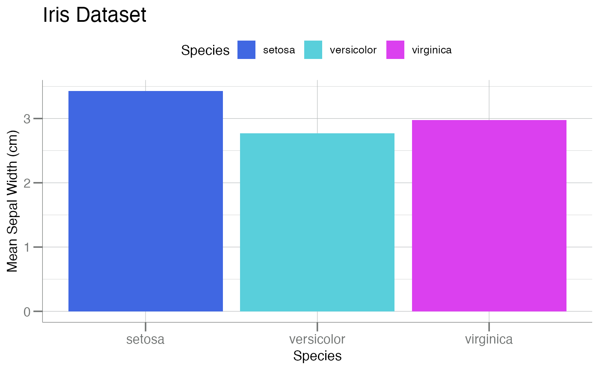
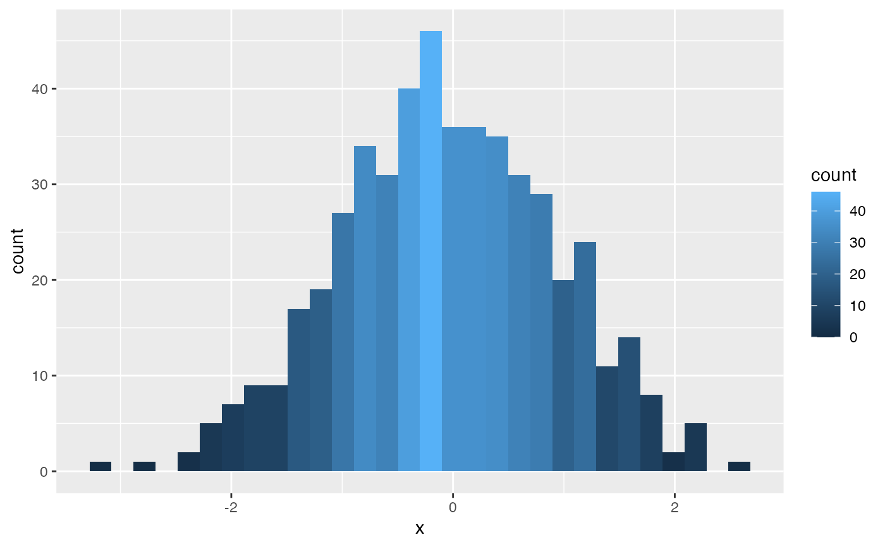

This ggplot2 compatible theme contains specific settings
based on the base theme theme_bw() and incorporates
elements based on requirements from SomaLogic's Commercial and Marketing teams.
It allows a consistent look, feel, and design for all
graphics generated by the SomaLogic Bioinformatics Team.
It includes a framework for gg-style
functions for plot consistency and standardization.
Arguments
- base_size
Numeric. SomaLogic default is 12. ggplot2 default is 11. See
theme_bw().- base_family
Character. See
theme_bw()and the examples.- legend.position
Character. One of "none", "top", "right", "bottom", or "left". See
theme().- hjust
Numeric
[0, 1]. Horizontal adjustment for the title. Left = 0, Center = 0.5, Right = 1.- aspect_ratio
Character. One of "landscape" (16:9), "profile" (8.5:11), or "none" (default). The "landscape" and "profile" options were requested by Marketing and can/should be used to finalize standard plots.
Examples
library(ggplot2)
# default ggplot2 theme; the `gg` object
gg$point
gg$bar
 gg$box
# ---------------
# SomaLogic Theme
# ---------------
gg$point + theme_soma()
gg$box + theme_soma()

# The `theme_soma()` allows some arguments:
# 1) put legend back to default `ggplot2` position
# 2) make font sizes larger: 11 -> 15
gg$point + theme_soma(legend.position = "right", base_size = 15)
# -----------------------
# SomaLogic Color Palette
# -----------------------
# Combined with the `discrete` color palette
gg$point + theme_soma() + scale_color_soma() # note: `color`

gg$bar + theme_soma() + scale_fill_soma() # note: `fill`

gg$box + theme_soma() + scale_fill_soma() # note: `fill`
# Combined with `continuous` color palette
# Continuous `color`
pt <- mtcars |>
ggplot(aes(x = wt, y = mpg, color = cyl)) +
geom_point(size = 4)
pt
pt + scale_continuous_color_soma() # note: `color`
# Continuous `fill`
h <- data.frame(x = withr::with_seed(101, rnorm(500))) |>
ggplot(aes(x, fill = after_stat(count))) +
geom_histogram()
h
#> `stat_bin()` using `bins = 30`. Pick better value with `binwidth`.

h + scale_continuous_fill_soma() # note: `fill`
#> `stat_bin()` using `bins = 30`. Pick better value with `binwidth`.
gg$box
# ---------------
# SomaLogic Theme
# ---------------
gg$point + theme_soma()
gg$box + theme_soma()

# The `theme_soma()` allows some arguments:
# 1) put legend back to default `ggplot2` position
# 2) make font sizes larger: 11 -> 15
gg$point + theme_soma(legend.position = "right", base_size = 15)
# -----------------------
# SomaLogic Color Palette
# -----------------------
# Combined with the `discrete` color palette
gg$point + theme_soma() + scale_color_soma() # note: `color`

gg$bar + theme_soma() + scale_fill_soma() # note: `fill`

gg$box + theme_soma() + scale_fill_soma() # note: `fill`
# Combined with `continuous` color palette
# Continuous `color`
pt <- mtcars |>
ggplot(aes(x = wt, y = mpg, color = cyl)) +
geom_point(size = 4)
pt
pt + scale_continuous_color_soma() # note: `color`
# Continuous `fill`
h <- data.frame(x = withr::with_seed(101, rnorm(500))) |>
ggplot(aes(x, fill = after_stat(count))) +
geom_histogram()
h
#> `stat_bin()` using `bins = 30`. Pick better value with `binwidth`.

h + scale_continuous_fill_soma() # note: `fill`
#> `stat_bin()` using `bins = 30`. Pick better value with `binwidth`.